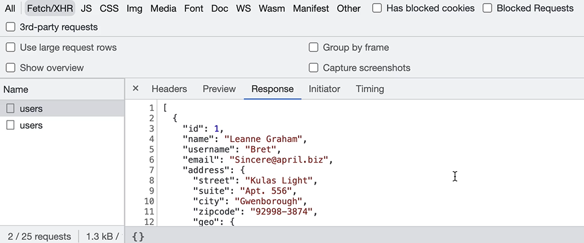

HOME
Understanding HTTP Requests
Topic im talking about
So we learned how to fetch data with axios.
As a frontend developer it's important to understand what happens
under the hood when you call the get method.
What happens
When we call the get method, axios sends an HTTP request to the
server.
HTTP is short for Hypertext Transfer Protocol
This is just a protocol for transferring data over the Internet.
It's the same protocol that powers the web.
When we visit a website, our browser sends a request to the websites
server asking for some content.
The server then responds with an HTTP response that contains some
html, css, and other resources needed to display the website in our
browser.
HTTP request in action
Open your code from the last lesson and inspect the networks tab in
the devtool.
We don't care about all those js files and stuff, just filter by
Fetch/XHR...
We have 2 requests to the users endpoint because of strict
mode.
The status of the endpoint is 200, which means successful.
It also shows the size of the request, and the time it took to
complete it.
If you click on a request you see more details
In HTTP, every request has two sections.

In the headers tab we have some general headers.
You can see that the Request Method is set to GET. That is used for
fetching data.
Later in this section we will look at other req methods for creating,
deleting, and updating data.
Then you see the status code again, and the remote address which is
the ip address of the target web server.
We also have response headers.
These are the headers included in the response, for the most part you
dont have to worry about them.
And also we have request headers.
 You dont really have to worry about these either, when we need to
we'll come back and talk about specific headers.
You dont really have to worry about these either, when we need to
we'll come back and talk about specific headers.
In the preview tab we can see the data that was returned from the
server, properly formatted.
In the response tab, we see the body of the response sent from the
server, in plain text.

So here we have an array of javascript objects.
This has been an HTTP request in action.